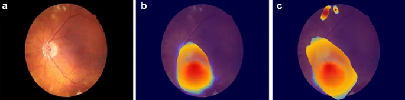
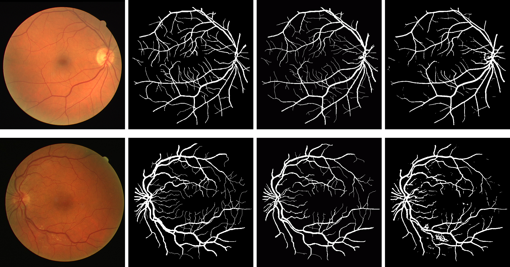

|
Tejas Prabhune I am a second-year EECS major at UC Berkeley, advised by Dr. Gopala K. Anumanchipalli, Peter Wu, Cheol Jun Cho, and Jiachen Lian. I primarily work at the Berkeley Speech Group within Berkeley Artificial Intelligence Research (BAIR). My research is focused on visualizing the vocal tract using speech-driven 3D avatars, brain-to-computer interfaces (BCI) for virtual embodiment, and generating realistic audio-visual dialogues using avatar-based LLMs. |
Publications |
|
|
Multimodal Pretraining for Vocal Tract Modeling
Tejas S. Prabhune, Bohan Yu, Rishi Jain, Peter Wu, Gopala K. Anumanchipalli ASRU Demo, 2023 paper |
|
|
Towards Streaming Speech-to-Avatar Synthesis
Tejas S. Prabhune, Peter Wu, Bohan Yu, Gopala K. Anumanchipalli ASRU Demo, 2023 paper |
|  |
Contrastive learning-based pretraining improves representation and transferability of diabetic retinopathy classification models
Minhaj Nur Alam, Rikiya Yamashita, Vignav Ramesh, Tejas S. Prabhune, Jennifer I. Lim, Robison Vernon Paul Chan, Joelle Hallak, Theodore Leng, Daniel Rubin Nature Scientific Reports, 2023 paper |
|  |
Dataset-Agnostic Vessel Segmentation of Retinal Fundus Images by a Vector Quantized Variational Autoencoder
Tejas S. Prabhune, David Walz Journal of Student Research, 2021 paper |
|
Template from Jon Barron's website. |